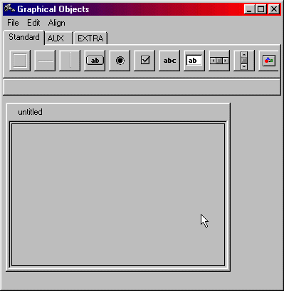
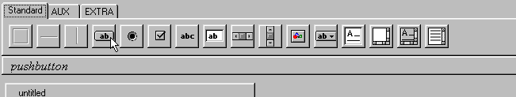
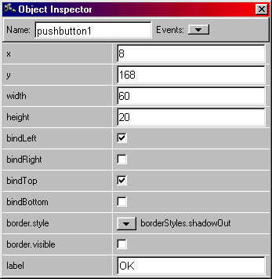
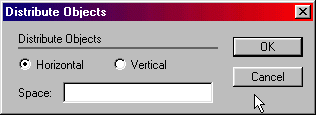

GUI Builder
Graphical Editor
The graphical editor is the part of interface
builder which allows the user interface to be constructed interactively
by direct manipulation of Lidskjalv objects. The figure below shows the
graphical editor on a newly created object.

The menubar consists of three menus: File, Edit and Align. There are
two areas inside the graphical editor: The object palette, and the contents
area.
Creating Items
Items are added to the window by utilizing the palette. An instance of
some item on a palette is created by dragging the item and placing it in
the contents area. The canvas pattern has a border and contains other items
in its local coordinate system.
When an item is dragged from the palette, the border of the receiving
canvas is highlighted to indicate in which canvas the item will belong.
As seen in the figure below the pattern in Lidskjalv, corredponding
to the button is posted below the palette.

These different patterns are described in the Lidskjalv reference manual.
Moving and Resizing
The items in the graphical editor can be moved and resized simply by dragging
with the mouse. If the item is grabbed in the interior the item is moved,
if it is grabbed near the border it is resized.
File Menu
Close
-
Closes the graphical editor.
Edit Menu
Undo
-
All the operations in the graphical editor can be undone by choosing the
"Undo" command in the edit menu. The undo is multilevel, which means that
all changes can be undone all the way back to when the window was opened
for editing in the session.
Redo
-
A sequence of undo-commands can be redone by invoking the redo command
in the edit menu - as long as no other operation has been performed after
the undoing.
Cut
-
A copy of the selected objects is placed on the clipboard along with the
underlying BETA code, and then deleted from the window. The objects can
then be pasted into the window again. It is possible to copy and paste
between graphical editors.
Copy
-
A copy of the selected objects is placed on the clipboard along with the
underlying BETA code. The objects can the be pasted into the window again.
It is possible to copy and paste between graphical editors.
Paste
-
A copy of the selected objects is placed on the clipboard along with the
underlying BETA code. The objects can the be pasted into the window again.
It is possible to copy and paste between graphical editors.
Delete
-
The selected objects along with the underlying BETA code
are deleted without affecting the clipboard.
Object Inspector
The object inspector dialog allows
the layout properties of the objects in the graphical editor to be edited
in a dialog form in contrast to direct manipulation. Most properties can
only be changed via the dialog. The content of the dialog depends on the
selected object. The basic info dialog has the properties that are common
to all objects.

Name: The name are expected to be a proper BETA identifier,
since this is the name the pattern will given in the source code.
Events: In the Events menu the different event types
of the selected object are listed. When the user clicks on an object, the
virtual procedure "onMouseUp" are executed in
that object. There is a virtual procedure for
each event that the object may receive. Selecting an event, will open a
structure editor (sif editor) on the virtual procedure corresponding to
the selected event type. If the specialization of the virtual procedure
does not yet exist, it is first be created.
Position( x, y) and Size( width , height):
The position and the size are most easily changed via direct manipulation,
but sometimes it may be easier to enter the precise values via the dialog.
Constraints: The constraints control how the
object reacts when the surrounding object are resized. If the bindleft
is false and bindRight is true, the object will follow the right edge of
the surrounding object without stretching. If bindLeft is true and bindRight
is true, the object will stretch etc.
Border: All objects have a border. The visibility
of the border can be controlled via the "visible" check box. There is different
kinds of shaded border types, that can be selected in the "style" popup
menu.
Show Source Code
-
Opens a structure editor (sif editor) on the
code that corresponds to the selected object.
Grid
Makes an invisible grid, which grabs the object being draged into the
window.
Fit to Contents
-
Frequently, there is a natural size of an object,
dependent of the content of the object. For example a StaticText object
would have the extent of the text as the natural size. The "Fit to Contents"
command in the edit menu will adjust the size of the selected object to
its natural size. Not all objects have natural sizes.
Align Menu
The alignment commands in the alignment menu
supply facilities to align objects in a row or centered underneath each
other etc. The alignment commands work on the current selection. The first
object selected will stay where it is.
These alignment commands are available:
Align left side
-
Aligns the left sides of the selected objects to the first selected object.
Align right side
-
Aligns the right sides of the selected objects to the first selected object.
Align top edge
-
Aligns the top edges of the selected objects to the first selected object.
Align bottom edge
-
Aligns the bottom edges of the selected objects to the first selected object.
Align vertical center
-
Aligns the vertical centers of the selected objects to the first selected
object.
Align horizontal center
-
Aligns the horizontal centers of the selected objects to the first selected
object.
Spacing...
-
This command will present a dialog that allows a group of objects to be
given the same size or the objects to be arranged, so the distance between
any two adjacent objects are the same.

-
To give a group of objects the same vertical distance do the following:
-
Select the objects that should be given the same vertical distance
-
Choose the Spacing... command
-
Check the "Vertical" check box and make sure the other check boxes are
unchecked
-
Type the desired distance into the field next to the check box
-
Press OK
 Notice:
The objects will keep their vertical and horizontal order in the window
when adjusting the distance. Furthermore, the top left object will always
stay where it is.
Notice:
The objects will keep their vertical and horizontal order in the window
when adjusting the distance. Furthermore, the top left object will always
stay where it is.